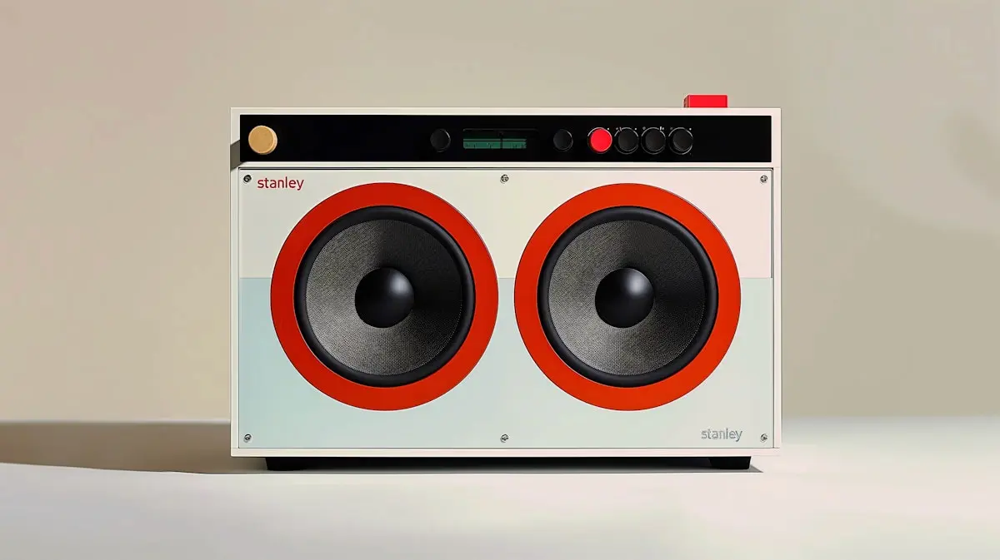

The Evolution of Speakers

Speakers have come a long way since their inception in the late 19th century. What started as simple devices designed to amplify sound has transformed into sophisticated smart audio systems that can connect to your home network, stream music from multiple platforms, and even respond to voice commands. In this post, we'll explore the fascinating journey of speakers, from analog to digital, and how they've transformed the way we experience sound.
The Early Days of Speakers
The first speakers were developed in the late 1800s, with the invention of the telephone and phonograph. These early devices used basic electromagnetic technology to convert electrical signals into audible sound. The horn-shaped megaphones of the time were large and cumbersome, but they laid the foundation for future innovations.
The Rise of Stereo Sound
In the mid-20th century, stereo sound revolutionized the audio industry. With two or more channels of sound, listeners could experience a richer, more immersive audio experience. This era also saw the introduction of high-fidelity (Hi-Fi) systems, which aimed to reproduce sound as accurately as possible.
The Digital Revolution
The advent of digital technology in the late 20th century brought about compact disc players, MP3s, and eventually, wireless streaming. Speakers became smaller, more efficient, and capable of delivering higher-quality sound. Bluetooth and Wi-Fi connectivity allowed users to stream music directly from their smartphones, tablets, and computers.
Smart Speakers: The Future of Audio
Today, smart speakers like Amazon Echo, Google Nest, and Apple HomePod dominate the market. These devices not only play music but also act as virtual assistants, controlling smart home devices, answering questions, and even ordering groceries. With advancements in AI and machine learning, smart speakers are becoming more intuitive and sophisticated.
Conclusion
From simple horn-shaped devices to AI-powered smart speakers, the evolution of audio technology has been nothing short of remarkable. As we look to the future, it's exciting to imagine what new innovations will further enhance our listening experiences.